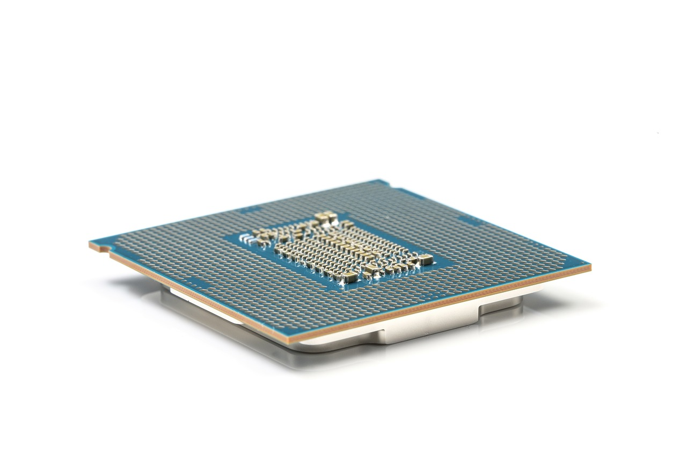

Strojna oprema računalnika

Poznaš središče računalnika? To je centralna procesna enota, ki ji krajše rečemo kar procesor.
Njene naloge:
CPE upravlja in nadzira delovanje računalnika ter izvršuje matematične in logične operacije. Izvaja programe, skrbi za izračunavanje in obdelavo podatkov (dvojiških števil) ter nadzor in upravljanje vzhodno-izhodnih naprav. Procesorji so narejeni iz silicija, ovoji pa so se skozi zgodovino zelo spreminjali (keramika, aluminij). Pri tem bi bilo pametno, če bi vedel še o, kar veliki, proizvodnji toplote. Pri procesorjih načeloma velja »več je bolje«, razen toplote in porabe energije.
Njena zgradba:
CPE je sestavljena iz digitalnih elektronskih vezij z nekaj 100 milijoni tranzistorjev, ki so na enem integriranem vezju. Le tega imenujemo mikroprocesor, ki je torej naprava, ki na enem koščku polprevodniškega materiala združuje več osnovnih elektronskih elementov (tranzistorjev, upornikov). Mikroprocesor je zaščiten s plastičnim ali keramičnim ohišjem, iz katerega štrlijo kovinski kontakti – nožice.
Mikroprocesor prevzema, dekodira, izvede ukaz, pripravi podatke in shranjuje rezultate.
CPE je tem boljši, čim več bitov obdeluje hkrati (32, 64 –bitov) in s čim višjo frekvenco dela. Enota za merjenje frekvence je Hz (MHz, GHz).
Predpomnilnik je pomnilnik, vgrajen v jedro procesorja, v katerem so shranjeni podatki, do katerih ima procesor pogost dostop. Vpliva na hitrost delovanja procesorja. Primer pomnilnika: AMD, Intel…
Tudi sam si lahko pogledaš lastnost pomnilnika na svojem računalniku.
